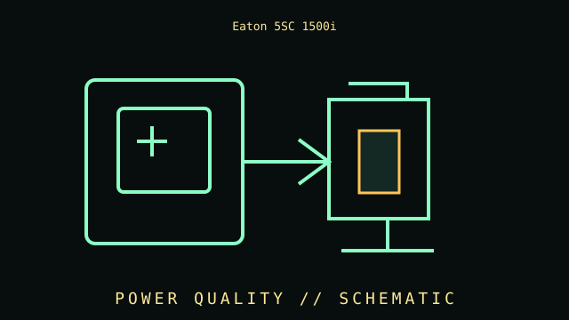

[ LINE-INTERACTIVE UPS // IDENTIFIED MODEL ]
Eaton 5SC1500i
230 V line-interactive UPS, 1500 VA / 1050 W, eight IEC C13 output receptacles; AVR and sine-wave output. This record covers the specific labeled model and regional configuration, not every item in the product family.

ARCHIVAL IDENTIFICATION: Preserve the complete SKU, suffix, region, date code, manual revision, battery part (if applicable) and observed condition. Similar names do not prove equivalent hardware.
Model specifications & service record
| Subcategory | Line-interactive UPS |
|---|---|
| Topology / function | Line-interactive UPS with AVR; inverter supplies output after battery transfer. |
| VA/W ratings and outlets | 1500 VA / 1050 W; 230 V; eight IEC C13 outlets for this 5SC1500i SKU. |
| Battery / replacement | Internal sealed lead-acid battery; service/replacement details depend on 5SC revision. Follow the product manual and use the Eaton-specified pack. |
| Runtime and conditions | Eaton runtime graphs show model/load-dependent estimates; use the 5SC1500i curve and actual watt load. Battery condition/age, charge, temperature and load affect the result; no fixed time is promised. |
| Interfaces / monitoring | LCD with USB/RS-232 communications; optional communication accessories depend on exact configuration. Verify the interface and host software support in the matching manual. |
| Safety and limitations | 230 V regional model; not for 120 V mains. IEC C13 load limits apply. Observe 1050 W limit and instructions for ventilation, battery servicing and disposal. |
| Revision / exact identification | 5SC1500i is not 5SC1500 or 5SC1500IRT. Suffix and region control input, outlets, form factor and documentation. |
Archival and service notes
- Record the nameplate and battery label before service; keep measured behavior separate from manufacturer ratings and note load, input, temperature and test date.
- Do not open energized mains equipment. Batteries can deliver high fault current and may contain hazardous materials; follow manufacturer handling, replacement and recycling instructions.
- For preserved units, record physical damage, alarms, missing parts, battery age/swelling/leakage and substituted components. Do not energize damaged equipment.
Manufacturer sources
- Manufacturer product specifications — Eaton 5SC1500iPrimary source for the named SKU’s regional specifications and available product documentation.
- Manufacturer manual / support referenceConsult the revision matching the complete label code. Runtime estimates are manufacturer estimates at stated loads and operating conditions, not a guaranteed duration for aged batteries.